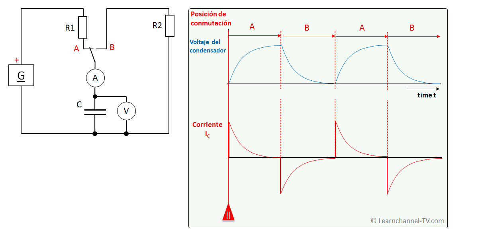
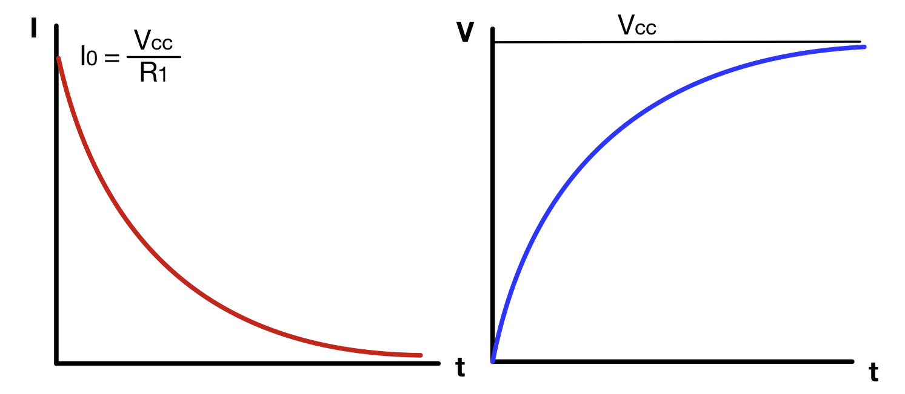
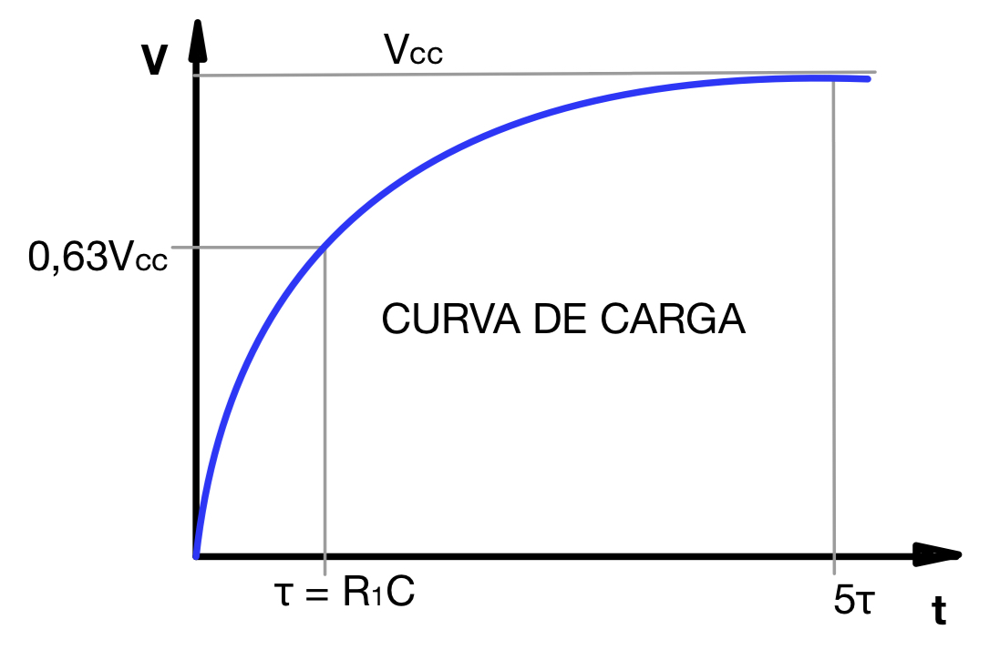
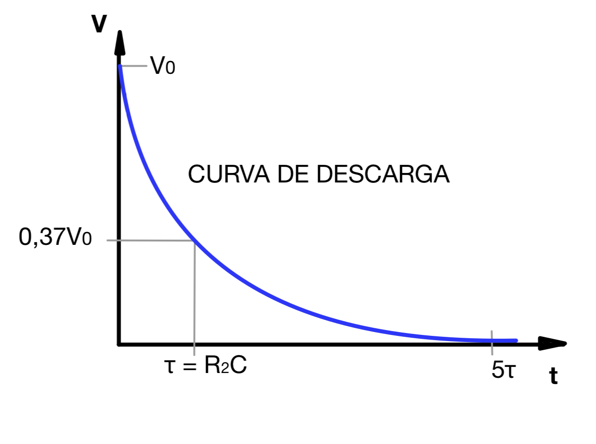

Un condensador no se carga y se descarga instantáneamente, sino que los electrones requieren un tiempo para ir de una placa a otra a través del circuito exterior. El tiempo que tarde en cargarse o descargarse un condensador dependerá de los siguientes factores:
- Capacidad del condensador (C): mientras mayor sea la capacidad, más cargas habrá que mover para cargar o descargar el condensador y, por lo tardo, se tardará más tiempo.
- Resistencia del circuito exterior (R): mientras más resistencia tenga el circuito exterior, más trabajo le constará a las cargas moverse de una placa a la otra y, por lo tanto, el proceso durará más tiempo.
De hecho, el producto R·C tiene dimensiones de tiempo y se conoce como constante de tiempo de carga (o descarga) del condensador. Se representa mediante la letra griega tau (τ) y se mide en segundos (s). En efecto, un ohmio (Ω) multiplicado por un faradio (F) es igual a un segundo (s).
Vamos a ver la relación que tiene esa constante de tiempo con el tiempo real que tarda en cargarse (o descargarse) el condensador. Para eso, veremos cómo es esa carga.
Vamos a usar un circuito muy simple en el que tenemos un conmutador que nos permite cargar o descargar un condensador. La resistencia del circuito de carga será R1, mientras que la del circuito de descarga será R2:

Cuando el conmutador está como en el esquema, la fuente de alimentación (G) cargará al condensador a través de la resistencia R1 hasta que la diferencia de potencial entre sus armaduras sea igual al voltaje del generador (V = Vcc). Cuando el conmutador se cambie, las armaduras del condensador quedarán unidas por R2 y los electrones podrán pasar de una a otra, descargándose hasta que no quede diferencia de potencial entre las placas (V = 0).
Si colocamos un voltímetro (V) para medir la diferencia de potencial entre las armaduras del condensador y un amperímetro (A) para medir la intensidad de corriente que sale o entra del condensador, podemos representar cómo van variando con el tiempo dichos valores al ir cargando y descargando el condensador:

Te dejo aquí una simulación del circuito anterior con diferentes valores para la resistencia de carga y la de descarga. Puedes interactuar con el conmutador del circuito para ver cómo varía la tensión (en verde) y la intensidad (en amarillo) con el tiempo. Incluso puedes cambiar el valor de las resistencia haciendo doble clic sobre ellas, para ver cómo se carga o descarga a diferentes velocidades.
Lo que obtenemos son las denominadas curvas de carga y de descarga del condensador. Esas curvas corresponden matemáticamente a exponenciales. De hecho, se conoce la expresión matemática exacta del voltaje y la intensidad de corriente de un condensador frente al tiempo:
Proceso de carga (desde 0 hasta Vcc voltios del generador):
| \[I=I_{0}\cdot e^{-\frac{t}{R_{1}C}}\] |
\[V=V_{CC}(1-e^{-\frac{t}{R_{1}C}})\] |
 |
Proceso de descarga (desde un voltaje inicial V0 hasta 0 voltios):
| \[I=-I_{0}\cdot e^{-\frac{t}{R_{2}C}}\] |
\[V=V_{0}e^{-\frac{t}{R_{2}C}}\] |
 |
Si nos centramos en la curva de carga del voltaje entre placas podemos ver que, cuando ha transcurrido un tiempo igual a la constante de tiempo del circuito de carga (tau), el valor del voltaje es el 63 % del máximo (que sería el voltaje de la fuente con la que cargamos el condensador). Para que podamos considerar que el condensador está ya prácticamente cargado al 100 % tendrá que transcurrir un tiempo igual a 5 constantes de tiempo. Ese será el tiempo de carga (tc) del condensador:

Análogamente, sobre la curva de descarga podemos comprobar que, cuando ha transcurrido un tiempo igual a la constante de tiempo del circuito de descarga (tau), el voltaje entre placas ha descendido hasta un 37 % del voltaje que había cuando empezó a descargarse el condensador. Igual que en la carga, tenemos que esperar hasta que transcurra un tiempo de 5 veces la constante de tiempo para que el voltaje valga prácticamente cero y el condensador quede descargado. Este es el tiempo de descarga (td) del condensador:

Este valor se obtiene sustituyendo t por R1C en la expresión de V, por lo que queda V = Vcc(1-1/e) = 0,63213Vcc
Este valor se obtiene al sustituir t = R2C en la expresión del voltaje de descarga. Se obtiene V = V0·1/e = 0,36788V0


.jpg)